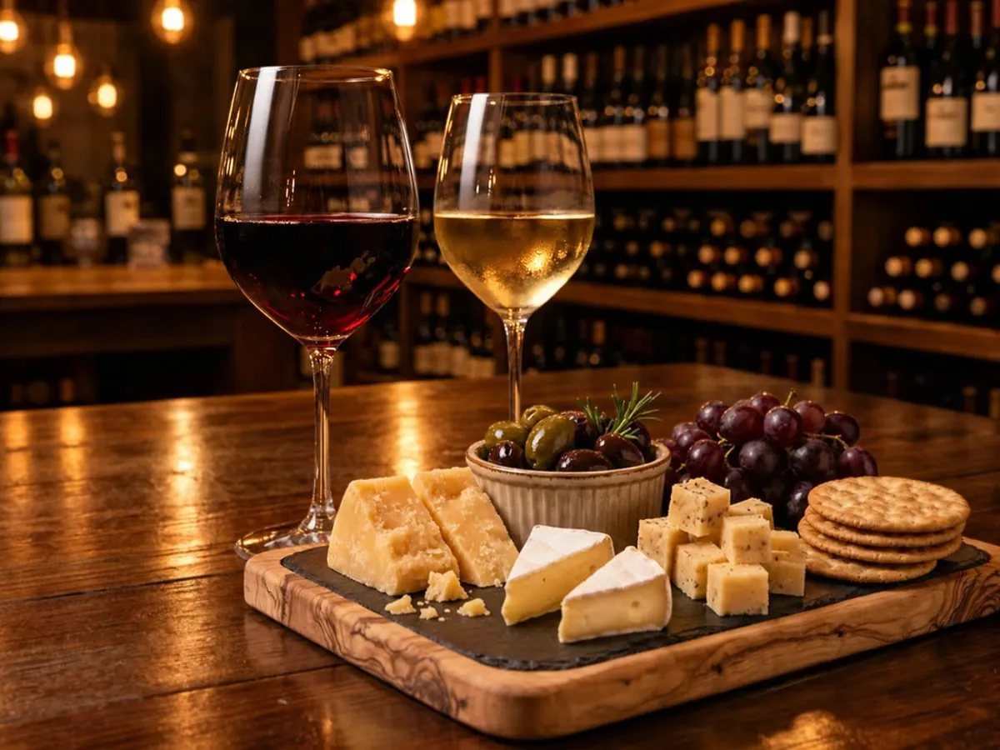

Wijnbars in Nijmegen: welke past bij jouw avond?
Bijgewerkt op 21 november 2026.
De ene avond wil je een rustig hoekje voor twee, de andere avond een lange tafel met vrienden of een lunch die uitloopt tot de borrel. Daarom deze keer geen ranglijst, maar per gelegenheid de wijnbar die wij zouden kiezen. Zes adressen, elk met een eigen karakter.

Zo hebben we gekozen
We lazen in oktober 2026 de websites van de wijnbars, cafés en restaurants in onze bedrijvengids die wijn de hoofdrol geven. We letten op de wijnkaart, het eten erbij, de sfeer en wanneer je er terechtkunt. Per gelegenheid kozen we er één.
Voor een date
Franco James: wijn van kleine makers
In de Priemstraat schenkt Franco James wijn van kleine wijnmakers, uit onder meer Piemonte, de Rhône, de Loire en Rheinhessen. Ook oranje wijn staat op de kaart. Daarbij kies je kleine hapjes of het driegangen chefsmenu, dat ook vegetarisch kan. De kaart wisselt elke dag.
Op donderdag is het Wet Spaghetti-avond, en soms neemt een wijnmaker de bar over. Onder de bar ligt een wijnkelder voor maximaal zestien mensen. Franco James is open van donderdag tot en met zondag.
Goed voor: een date, of ontdekken wat je nog niet kent.
Voor een avondje Frankrijk
La Belle Excuse: Franse bistro in Oost
In de Van 't Santstraat in Nijmegen-Oost runnen de Fransman Sébastien en Janneke een wijnbar en bistro. Je kiest uit een flinke rij Franse wijnen per glas, met kazen en charcuterie die ze zelf uit Frankrijk meenemen.
Kom voor een borrel met hapjes of blijf voor het diner: escargots uit de Bourgogne, gougères met Comté of een entrecôte met frites. Elke week is er een vegetarische dagschotel. Open van donderdag tot en met zondag, vanaf vijf uur.
Goed voor: wie zich even in Frankrijk wil wanen.
Wijn in een historisch café
Buskens: een café uit 1910
Buskens aan de Berg en Dalseweg zit in een rijksmonument dat in 1910 als café openging. Vroeger zaten hier schrijvers en muzikanten, nu kom je voor een borrel, een lunch of een avond eten. De wijnkaart wisselt steeds, met veel flessen van lokale importeurs.
Wil je proeven, kies dan een high wine met proefglazen en hapjes, of het menu van de chef met passende wijnen. Er zijn regelmatig avonden, van oesters met bubbels tot bingo. Buskens is open van dinsdag tot en met zondag. Op maandag is het dicht.
Goed voor: een avond met vrienden in een pand met een verhaal.
Na het winkelen
Olivier: borrelplank in de Hertogstraat
Na een middag winkelen schuif je aan bij Olivier in de Hertogstraat. Bij de wijn bestel je barbites of een borrelplank, zoals de Italiaanse plank met vleeswaren, kaas, brood en olijven. Ze halen zoveel mogelijk producten uit de buurt.
Wil je er de tijd voor nemen, boek dan een high wine. Dat kan ook met een groep, voor een verjaardag of een bedrijfsuitje. Olivier is open van dinsdag tot en met zondag, vanaf de middag.
Goed voor: een borrel met vrienden of collega's.
Een lange lunch met wijn
Nostra: de hele kaart per glas
Nostra is een lunch-wijnbar in het centrum met een mediterrane kaart die met de seizoenen meegaat. Het fijne: je kunt alle wijnen per glas bestellen, dus je proeft makkelijk een paar soorten naast elkaar.
Vanaf drie uur kun je kiezen voor de High Wining, een soort high tea met wijn en drie rondes mediterrane hapjes. Bij mooi weer zit je op het terras. Nostra is elke dag open tot het begin van de avond. In het weekend werken ze met twee tijdsloten, en een groep is maximaal acht personen.
Goed voor: een lange zaterdagmiddag met vriendinnen.
Als het een diner wordt
Restobar Fiftyeight: wijnbar en restaurant in één
Net buiten het centrum, in de Fransestraat, loopt een glas wijn bij Restobar Fiftyeight makkelijk uit op een heel diner. Chef Edmundo Gruia kookt modern-Europees, met gerechten als hert met bramen en witlof of zeebaars met paling en vlierbloesem.
Je eet à la carte, kiest het chefsmenu of deelt een tafel vol bites, van oesters tot rendangkroketjes. De wijnen komen van Europese wijnmakers. Overdag is er een wisselend lunchmenu, en vegetarisch kan ook.
Goed voor: wie van wijn en goed eten houdt.
Zin in een high wine? Lees dan de 5 mooiste locaties voor een high wine in Nijmegen. Alle cafés staan in de bedrijvengids onder cafés.
Meer in onze gids uitgaan in Nijmegen.
Veelgestelde vragen
Wat zijn goede wijnbars in Nijmegen?
Onze favorieten zijn Franco James in de Priemstraat, La Belle Excuse in de Van 't Santstraat, Buskens aan de Berg en Dalseweg, Olivier in de Hertogstraat, Nostra en Restobar Fiftyeight in de Fransestraat.
Waar drink je natuurwijn of oranje wijn in Nijmegen?
Bij Franco James in de Priemstraat, waar ze wijn van kleine wijnmakers schenken, ook oranje wijn.
Waar kun je een high wine doen in Nijmegen?
Bij Buskens, Olivier en Nostra (de High Wining, vanaf drie uur). Meer adressen staan in ons artikel over high wine in Nijmegen.
Welke wijnbar in Nijmegen is op maandag open?
Nostra is elke dag open, tot het begin van de avond. Buskens en Olivier zijn op maandag dicht, Franco James en La Belle Excuse zijn alleen van donderdag tot en met zondag open.